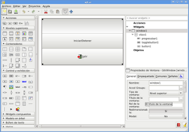

Desarrollo de aplicaciones gráficas con python+gtk+glade. Parte 7. Barra de progreso y boton biestado
Posted on vie 25 diciembre 2009 in Tutorial Python • 2 min read
Continuando con la serie de tutoriales sobre pygtk. Este trata del desarrollo de una sencilla aplicación que contiene una barra de progreso que avanzará cada segundo mostrando el tiempo el cual trancurre la barra de progreso. En este tutorial como se ejecuta un proceso que puede congelar la ventana se usará hilos para evitarlo, adicionalmente se muestra el uso de botones biestado para controlar la barra de progreso.
En la figura se muestra el diseño de la aplicación.

El código se muestra a continuación:
#!/usr/bin/env python
# -*- coding: utf-8 -*-
# sin ej6.py
#
# Copyright 2009 Ernesto Nadir Crespo Avila
#
# This program is free software; you can redistribute it and/or modify
# it under the terms of the GNU General Public License as published by
# the Free Software Foundation; either version 2 of the License, or
# (at your option) any later version.
#
# This program is distributed in the hope that it will be useful,
# but WITHOUT ANY WARRANTY; without even the implied warranty of
# MERCHANTABILITY or FITNESS FOR A PARTICULAR PURPOSE. See the
# GNU General Public License for more details.
#
# You should have received a copy of the GNU General Public License
# along with this program; if not, write to the Free Software
# Foundation, Inc., 51 Franklin Street, Fifth Floor, Boston,
# MA 02110-1301, USA.
#Importar los módulos gtk, time, threading, thread, gobject
import gtk, time
import threading
import thread
import gobject
#Iniciando el hilo sin usarlo
gtk.gdk.threads_init()
#La clase App hereda threading.Thread
class App(threading.Thread):
def __init__(self):
#Método constructor, asociando los widgets
self.glade_file = "ej6.ui"
self.glade = gtk.Builder()
self.glade.add_from_file(self.glade_file)
self.window1 = self.glade.get_object('window1')
self.togglebutton1 = self.glade.get_object('togglebutton1')
self.button1 = self.glade.get_object('button1')
self.progressbar1 = self.glade.get_object('progressbar1')
self.new_val = 0.0
self.rango =60
#Definiendo el valor inicial de la barra de proceso, definiendo los saltos en 0.1
self.progressbar1.set_fraction(self.new_val)
self.progressbar1.set_pulse_step(0.1)
self.window1.connect("destroy",self.on_window1_destroy)
self.button1.connect('clicked', self.on_button1_clicked)
self.togglebutton1.connect('toggled',self.on_togglebutton1_toggled)
#Iniciando el hilo en el constructor
threading.Thread.__init__(self)
self.window1.show_all()
def __iteracion__(self):
#Iteración en segundos cambiando el valor en la barra de progreso.
for i in range(self.rango):
if self.togglebutton1.get_active() == True:
self.new_val = self.progressbar1.get_fraction() + 0.01
if self.new_val > 1.0:
self.new_val = 0.0
self.togglebutton1.set_active(False)
break
else:
time.sleep(1)
self.x = self.new_val*100
self.progressbar1.set_text("%s" %self.x)
self.progressbar1.set_fraction(self.new_val)
else:
return
def on_togglebutton1_toggled(self,*args):
#Si cambia el evento en el boton biestado se inicia la iteración entre los hilos.
variable = self.togglebutton1.get_active()
self.rango = 100
if variable == True:
lock = thread.allocate_lock()
lock.acquire()
thread.start_new_thread( self.__iteracion__, ())
lock.release()
else:
#Se detiene la barra de progreso
self.progressbar1.set_fraction(self.new_val)
self.progressbar1.set_text("%s" %self.x)
return
def on_window1_destroy(self,*args):
#Se cierra la aplicación
gtk.main_quit()
def on_button1_clicked(self,*args):
#Se cierra la aplicación al darle clip al boton salir.
gtk.main_quit()
def main(self):
#Inicia la aplicación
gtk.main()
if __name__ == '__main__':
app = App()
app.main()
En la siguiente figura se muestra la aplicación:

===
¡Haz tu donativo! Si te gustó el artículo puedes realizar un donativo con Bitcoin (BTC) usando la billetera digital de tu preferencia a la siguiente dirección: 17MtNybhdkA9GV3UNS6BTwPcuhjXoPrSzV
O Escaneando el código QR desde billetera: